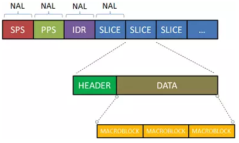

WebrtcBase
WebrtcBase
WebrtcCode
序列号判断
// 如果seq2 比seq1 要老的话，返回真
// 1 2 3 4 5 6 7 8
// seq1 = 6 seq2 = 4 返回真
bool AheadOf(uint16_t seq1, uint16_t seq2);SDP
SDP 中的流媒体
video
H264
h264 有四种级别的画质，分别是baseline、extended、main 和high。
- baseline 基本画质，支持I/P 帧
- extended 进阶画质，支持I/P/B/SP/SI 帧(后两个没听说过)
- main 主流画质，支持I/P/B 帧
- high 高级画质
webrtc 在sdp 交换中有对视频描述如下：
a=fmtp:102 level-asymmetry-allowed=1;packetization-mode=1;profile-level-id=42001f
a=fmtp:127 level-asymmetry-allowed=1;packetization-mode=0;profile-level-id=42001f
a=fmtp:125 level-asymmetry-allowed=1;packetization-mode=1;profile-level-id=42e01f
a=fmtp:108 level-asymmetry-allowed=1;packetization-mode=0;profile-level-id=42e01f
a=fmtp:124 level-asymmetry-allowed=1;packetization-mode=1;profile-level-id=4d0032
a=fmtp:123 level-asymmetry-allowed=1;packetization-mode=1;profile-level-id=640032其中profile-level-id=xxxxxx 就是H264 profile和level 的组合，xxxxxx 可以分为三部分，每部分为两个十六进制的数字，从左到右依次为profile_idc(表示画质)、profile_iop和level_idc(码率和分辨率限制)。一般关注第一个和第三个。
https://blog.csdn.net/liang12360640/article/details/52096499
SDP 中的setup
a=setup 主要是表示dtls 协商中角色的问题，谁是客户端，谁是服务器。
# 既可以是服务端 也可以是客户端
a=setup:actpass
# 客户端
a=setup:active
# 服务端
a=setup:passivehttps://blog.csdn.net/glw0223/article/details/91871718
https://blog.csdn.net/m0_37263637/article/details/96355737
SDP 中的 trickle
#通知对端支持trickle，即sdp里面描述媒体信息和ice候选项的信息可以分开传输
a=ice-options:tricklehttps://www.jianshu.com/p/61e3c9e13456
SDP 中的 音视频描述
m=video 9 UDP/TLS/RTP/SAVPF 96 97 98 99 100 101 102 122 127 121 125 107 108 109 124 120 123 119 114 115 116AVP ==> audio video profile 不会启用rtcp 反馈，也不会根据rtcp反馈动态调整码率
AVPF ==> audio video profile feedback
SAVPF ==> safe audio video profile feedback
https://segmentfault.com/a/1190000020794391
SDP 的格式
webrtc 中，unified plan、plan B、plan A 是SDP 中多路媒体略的协商方式，在72 版本中，Chrome 默认使用unified plan 替换了Plan B。
在浏览器端，打开chrome://webrtc-internals 可以查看到PeerConnection 使用的sdp 协商方式。
https://webrtc.github.io/samples/src/content/peerconnection/pc1/, { iceServers: [], iceTransportPolicy: all, bundlePolicy: balanced, rtcpMuxPolicy: require, iceCandidatePoolSize: 0, sdpSemantics: "unified-plan" },- plan B : sdp 中，一个m 行描述多路media stream 以，msid 作为区分
a=group:BUNDLE audio a=msid-semantic: WMS stream-id-2 stream-id-1 m=audio 9 UDP/TLS/RTP/SAVPF 111 103 104 9 0 8 106 105 13 110 112 113 126 ... a=mid:audio ... a=rtpmap:103 ISAC/16000 ... a=ssrc:10 cname:cname a=ssrc:10 msid:stream-id-1 track-id-1 a=ssrc:10 mslabel:stream-id-1 a=ssrc:10 label:track-id-1 a=ssrc:11 cname:cname a=ssrc:11 msid:stream-id-2 track-id-2 a=ssrc:11 mslabel:stream-id-2 a=ssrc:11 label:track-id-2 - unified plan: 一个m 行对弈一个media stream
a=group:BUNDLE 0 1 a=msid-semantic: WMS m=audio 9 UDP/TLS/RTP/SAVPF 111 103 104 9 0 8 106 105 13 110 112 113 126 ... a=mid:0 ... a=sendrecv a=msid:- <track-id-1> ... a=rtpmap:103 ISAC/16000 ... a=ssrc:10 cname:cname a=ssrc:10 msid: track-id-1 a=ssrc:10 mslabel: a=ssrc:10 label:track-id-1 m=audio 9 UDP/TLS/RTP/SAVPF 111 103 104 9 0 8 106 105 13 110 112 113 126 ... a=mid:1 ... a=sendrecv a=msid:- track-id-2 ... a=rtpmap:103 ISAC/16000 ... a=ssrc:11 cname:cname a=ssrc:11 msid: track-id-2 a=ssrc:11 mslabel: a=ssrc:11 label:track-id-2
https://juejin.im/post/6844903792001974280
H264
前言
H264 中，句法元素从大到小被组织为序列(GOP)、图像、切片、宏块、子宏块共五个层次。
一个序列 = n 个图像帧
一个帧 = n 个切片
一个切片 = n 个宏块
一个宏块 = n 个子宏块
码流结构
码流结构从功能上分为两层：
- VCL(视频编码层)
包括核心压缩引擎和快，宏块和片的语法级别定义，设计目标是尽可能独立于网络进行高效的编码。即编码处理的输出，表示被压缩编码后的视频数据序列 - NAL(网络提取层)
负责将VCL 产生的比特字符串适配到各种各样的网络和多元环境中，覆盖所有片级以上的语法级别

NALU HEADER
+---------------+
|0|1|2|3|4|5|6|7|
+-+-+-+-+-+-+-+-+
|F|NRI| Type |
+---------------+NALU HEADER 数据位描述：
- F 在规范中一直为0
- NRI 表明这个NALU 的重要性
- Type 表明NALU 类型：
- 1- 23 单个NAL 数据包
- 其他的组包格式
几种常见的NALU 类型
主要介绍PPS、SPS和SEI:
SPS(Sequence Parameter Sets，序列参数集):是H.264码流序列的第一个NALU。SPS 语法单元存放一个视频序列的共同特征。从SPS 中能获取图像的宽和高数据信息。如果SPS 丢失的话，解码大概率出现失败的情况。
PPS(Picture Parameter Sets，图像参数集): 是H.264码流序列的第二个NALU。PPS 语法单元存放一个视频图像的典型特征。
SEI(Supplemental Enhancement Information，补充增强信息):提供了向视频码流中加入额外信息的方法。
webrtc h264 pack
STAP-A
0 1 2 3
0 1 2 3 4 5 6 7 8 9 0 1 2 3 4 5 6 7 8 9 0 1 2 3 4 5 6 7 8 9 0 1
+-+-+-+-+-+-+-+-+-+-+-+-+-+-+-+-+-+-+-+-+-+-+-+-+-+-+-+-+-+-+-+-+
| RTP Header |
+-+-+-+-+-+-+-+-+-+-+-+-+-+-+-+-+-+-+-+-+-+-+-+-+-+-+-+-+-+-+-+-+
|STAP-A NAL HDR | NALU 1 Size | NALU 1 HDR |
+-+-+-+-+-+-+-+-+-+-+-+-+-+-+-+-+-+-+-+-+-+-+-+-+-+-+-+-+-+-+-+-+
| NALU 1 Data |
: :
+ +-+-+-+-+-+-+-+-+-+-+-+-+-+-+-+-+-+-+-+-+-+-+-+-+
| | NALU 2 Size | NALU 2 HDR |
+-+-+-+-+-+-+-+-+-+-+-+-+-+-+-+-+-+-+-+-+-+-+-+-+-+-+-+-+-+-+-+-+
| NALU 2 Data |
: :
| +-+-+-+-+-+-+-+-+-+-+-+-+-+-+-+-+
| :...OPTIONAL RTP padding |
+-+-+-+-+-+-+-+-+-+-+-+-+-+-+-+-+-+-+-+-+-+-+-+-+-+-+-+-+-+-+-+-+
STAP-A NAL HDR 格式如下
+---------------+
|0|1|2|3|4|5|6|7|
+-+-+-+-+-+-+-+-+
|F|NRI| Type |
+---------------+
其中F 和NRI 取NALU 1 的F 和NRI。 TYPE 默认都是24eg:
原始264 码流(带start-code):
sps [0 0 0 1 103 77 64 41 149 144 5 0 91 176 17 0 0 3 3 232 0 1 212 192 132] pps [0 0 0 1 104 235 143 32] idr [0 0 0 1 101 184 4 11]
编码出来后的数据:
[120 0 21 103 77 64 41 149 144 5 0 91 176 17 0 0 3 3 232 0 1 212 192 132]
STAP-A NAL HDR ==>103 ==> 0110 0111 ==> 011(1 1000 = 24) ==> 01111000(120)
0 21 => nalu 1 len 21
[0 4 104 235 143 32]
0 4 => nalu 2 len 4
FU-A
0 1 2 3
0 1 2 3 4 5 6 7 8 9 0 1 2 3 4 5 6 7 8 9 0 1 2 3 4 5 6 7 8 9 0 1
+-+-+-+-+-+-+-+-+-+-+-+-+-+-+-+-+-+-+-+-+-+-+-+-+-+-+-+-+-+-+-+-+
| FU indicator | FU header | |
+-+-+-+-+-+-+-+-+-+-+-+-+-+-+-+-+ |
| |
| FU payload |
| |
| +-+-+-+-+-+-+-+-+-+-+-+-+-+-+-+-+
| :...OPTIONAL RTP padding |
+-+-+-+-+-+-+-+-+-+-+-+-+-+-+-+-+-+-+-+-+-+-+-+-+-+-+-+-+-+-+-+-+
Figure 14. RTP payload format for FU-A
The FU indicator octet has the following format:
+---------------+
|0|1|2|3|4|5|6|7|
+-+-+-+-+-+-+-+-+
|F|NRI| Type |
+---------------+
Values equal to 28 and 29 in the type field of the FU indicator octet identify an FU-A and an FU-B, respectively.
The use of the F bit is described in [Section 5.3].
The value of the NRI field MUST be set according to the value of the NRI field in the fragmented NAL unit.
The FU header has the following format:
+---------------+
|0|1|2|3|4|5|6|7|
+-+-+-+-+-+-+-+-+
|S|E|R| Type |
+---------------+
S: 1 bit
When set to one, the Start bit indicates the start of a
fragmented NAL unit. When the following FU payload is not the
start of a fragmented NAL unit payload, the Start bit is set
to zero.
E: 1 bit
When set to one, the End bit indicates the end of a fragmented
NAL unit, i.e., the last byte of the payload is also the last
byte of the fragmented NAL unit. When the following FU
payload is not the last fragment of a fragmented NAL unit, the
End bit is set to zero.
R: 1 bit
The Reserved bit MUST be equal to 0 and MUST be ignored by the
receiver.
Type: 5 bits
The NAL unit payload type was the fragmentation nalu type. eg: 编码一个I 帧 第一个字节为0x65=101，进行了分组
原始数据为
0x65 => 0110-0101
[101 184 4 11 255]
FU-idicator => 011 + 28(11100) => 01111100(0x7c)= 124
first fu-a FU-header => 100 + (nalu-type[00101]) => 10000101(0x85) = 133
middle fu-a FU-herader => 000 + (nalu-type[00101]) => 00000101(0x05) = 5
last fu-a FU-herader => 010 + (nalu-type[00101]) => 01000101(0x45) = 69
不带naluHeader(101)的内容(0copy 客户端接收异常原因)
第一个FU-A
[[124 133] 184 4 11 255]
中间的FU-A
[[124 5] 177 244 72 95]
最后一个FU-A
[[124 69] 212 53 47 240]
workflow
// 初始化packetizer 的最大包长度、和最后一个包冗余空间
RtpPacketizer packetizer(maxpayload_len, reduction_len);
// 输入一帧数据和nalu 分割信息
int num_packets = packetizer->setPayload(data, len, frag);
void setPayload(data, len, frag) {
// 根据frag 将一帧数据分为多个nalu，并塞入到input_fragments_ 中
input_fragments_.push_back(Fragment());
// 根据长度、打包类型进行打包
GeneratePackets();
return num_packet_left;
}
void GeneratePackets() {
for(input_fragments) {
case SingleNalUnit: packetSignaleNalu()
case NonInterleaved: PacketizeFuA() or PacketizeStapA()
}
}
// 一个nalu 拆为多个packets
void PacketizeFuA() {
// 1: 判断是否最后一个nalu，添加对应的 extenlen(头部扩展长度)
// 2: 需要发送的nalu的nalu header 不用保存，在nalu-header 保留nalu header 类型(fragment.length = naluHeadLen)
// 3: 每个包的负载大小为最大减去Fu-A 协议长度(indicator + header) 2 Byte
// 一个 nalu 14 bytes 包最大负载为5字节
// (14+(5-1))/5 = 3(packets)
// 14 / 3 = 4(bytes per packets)
// 14 % 3 = 2(first packets) 2 3 3 3 3
// 4: 计算分为多少个包、计算每个包的长度
// 5: 将一个nalu 划分为多个PacketUnit 塞进 packets_
}
// 多个nalu 合并为一个packets
void PacketizeStapA() {
// 循环(当前空间足够，即使是最后一个nalu 加上extlen 也足够)
// 将多个nalu 塞到多个PacketUnit 中，标识第一个包和最后一个包即可。
}RTP/RTCP协议
分类：
RTP 关乎数据传输
RTCP 关乎数据传输控制
RTP 协议和头部扩展
首部格式
RTP 分组的首部格式：

包头信息
包头各个字段信息如下所示：
版本号(V):2比特，标识rtp 版本
填充位(P):1比特，如果设置该位置的话，rtp包的尾部就包含附加的填充字节
扩展位(X):1比特，如果设置该位置的话，RTP 固定头部(12字节)后就跟着一个扩展头部
CSRC计数器(CC):4 比特，在固定头部后跟随的CSRC 的数目
标记位(M):1比特，由具体的解释文档说明，对于H264来说标识一帧的结束
荷载类型(PT):7比特，标识RTP荷载的类型
序列号:2字节，每发送一个RTP 数据包，序列号增加1。接收端根据此检测丢包和重建包序列
时间戳:4字节，记录一个时间戳
同步源标识符(SSRC):4字节，随机算法生成
贡献源列表(CSRC):4字节，0~15个CSRC，具体数目由CSRC 计数器(CC)计算生成。
头部扩展
头部扩展如下：
如上所述，如果扩展位置为1，则一个长度可变的头扩展部分被加到RTP 固定头之后。头扩展包含16位比特的长度与，指示扩展项中32比特字的个数，但是不包含4字节扩展头的长度。为了实现特定的不同扩展，其中扩展项的前16位比特用以识别标识符或者参数。
有且仅有一个头部扩展
本博客所有文章除特别声明外，均采用 CC BY-SA 4.0 协议 ，转载请注明出处！